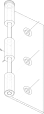
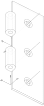
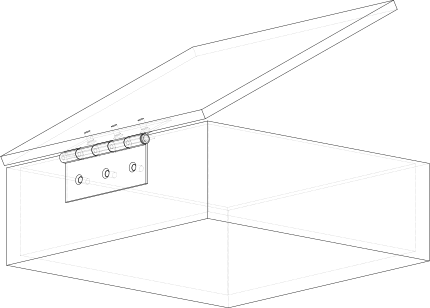

Joint Tutorial
This tutorial provides a step by step guide in using Joint’s as we create
a box with a hinged lid to illustrate the use of three different Joint types.
Step 1: Setup
Before getting to the CAD operations, this selector script needs to import the build123d environment.
from build123d import *
from ocp_vscode import *
Step 2: Create Hinge
This example uses a common Butt Hinge to connect the lid to the box base so a Hinge class
is used to create that can create either of the two hinge leaves. As the focus of this
tutorial is the joints and not the CAD operations to create objects, this code is not
described in detail.
class Hinge(Compound):
"""Hinge
Half a simple hinge with several joints. The joints are:
- "leaf": RigidJoint where hinge attaches to object
- "hinge_axis": RigidJoint (inner) or RevoluteJoint (outer)
- "hole0", "hole1", "hole2": CylindricalJoints for attachment screws
Args:
width (float): width of one leaf
length (float): hinge length
barrel_diameter (float): size of hinge pin barrel
thickness (float): hinge leaf thickness
pin_diameter (float): hinge pin diameter
inner (bool, optional): inner or outer half of hinge . Defaults to True.
"""
def __init__(
self,
width: float,
length: float,
barrel_diameter: float,
thickness: float,
pin_diameter: float,
inner: bool = True,
):
# The profile of the hinge used to create the tabs
with BuildPart() as hinge_profile:
with BuildSketch():
for i, loc in enumerate(
GridLocations(0, length / 5, 1, 5, align=(Align.MIN, Align.MIN))
):
if i % 2 == inner:
with Locations(loc):
Rectangle(width, length / 5, align=(Align.MIN, Align.MIN))
Rectangle(
width - barrel_diameter,
length,
align=(Align.MIN, Align.MIN),
)
extrude(amount=-barrel_diameter)
# The hinge pin
with BuildPart() as pin:
Cylinder(
radius=pin_diameter / 2,
height=length,
align=(Align.CENTER, Align.CENTER, Align.MIN),
)
with BuildPart(pin.part.faces().sort_by(Axis.Z)[-1]) as pin_head:
Cylinder(
radius=barrel_diameter / 2,
height=pin_diameter,
align=(Align.CENTER, Align.CENTER, Align.MIN),
)
fillet(
pin_head.edges(Select.LAST).filter_by(GeomType.CIRCLE),
radius=pin_diameter / 3,
)
# Either the external and internal leaf with joints
with BuildPart() as leaf_builder:
with BuildSketch():
with BuildLine():
l1 = Line((0, 0), (width - barrel_diameter / 2, 0))
l2 = RadiusArc(
l1 @ 1,
l1 @ 1 + Vector(0, barrel_diameter),
-barrel_diameter / 2,
)
l3 = RadiusArc(
l2 @ 1,
(
width - barrel_diameter,
barrel_diameter / 2,
),
-barrel_diameter / 2,
)
l4 = Line(l3 @ 1, (width - barrel_diameter, thickness))
l5 = Line(l4 @ 1, (0, thickness))
Line(l5 @ 1, l1 @ 0)
make_face()
with Locations(
(width - barrel_diameter / 2, barrel_diameter / 2)
) as pin_center:
Circle(pin_diameter / 2 + 0.1 * MM, mode=Mode.SUBTRACT)
extrude(amount=length)
add(hinge_profile.part, rotation=(90, 0, 0), mode=Mode.INTERSECT)
# Create holes for fasteners
with Locations(leaf_builder.part.faces().filter_by(Axis.Y)[-1]):
with GridLocations(0, length / 3, 1, 3):
holes = CounterSinkHole(3 * MM, 5 * MM)
# Add the hinge pin to the external leaf
if not inner:
with Locations(pin_center.locations[0]):
add(pin.part)
Once the two leaves have been created they will look as follows:
 {kind=link}
{kind=link}
Note that the XYZ indicators and a circle around the hinge pin indicate joints that are discussed below.
Step 3: Add Joints to the Hinge Leaf
The hinge includes five joints:
A
RigidJointto attach the leafA
RigidJointorRevoluteJointas the hinge AxisThree
CylindricalJoint’s for the countersunk screws
Step 3a: Leaf Joint
The first joint to add is a RigidJoint that is used to fix the hinge leaf to the box
or lid.
#
# Leaf attachment
RigidJoint(
label="leaf",
joint_location=Location(
(width - barrel_diameter, 0, length / 2), (90, 0, 0)
),
)
Each joint has a label which identifies it - here the string “leaf” is used, the to_part
binds the joint to leaf_builder.part (i.e. the part being built), and joint_location
is specified as middle of the leaf along the edge of the pin. Note that
Location objects describe both a position and orientation which is
why there are two tuples (the orientation listed is rotate about the X axis 90 degrees).
Step 3b: Hinge Joint
The second joint to add is either a RigidJoint (on the inner leaf) or a RevoluteJoint
(on the outer leaf) that describes the hinge axis.
#
# Leaf attachment
RigidJoint(
label="leaf",
joint_location=Location(
(width - barrel_diameter, 0, length / 2), (90, 0, 0)
),
)
# [Hinge Axis] (fixed with inner)
if inner:
RigidJoint(
"hinge_axis",
joint_location=Location(
(width - barrel_diameter / 2, barrel_diameter / 2, 0)
),
)
else:
RevoluteJoint(
"hinge_axis",
axis=Axis(
(width - barrel_diameter / 2, barrel_diameter / 2, 0), (0, 0, 1)
),
angular_range=(90, 270),
)
The inner leaf just pivots around the outer leaf and therefore the simple RigidJoint is
used to define the Location of this pivot. The outer leaf contains the more complex
RevoluteJoint which defines an axis of rotation and angular limits to that rotation (90
and 270 in this example as the two leaves will interfere with each other outside of this range).
Note that the maximum angle must be greater than the minimum angle and therefore may be greater
than 360°. Other types of joints have linear ranges as well as angular ranges.
Step 3c: Fastener Joints
The third set of joints to add are CylindricalJoint’s that describe how the countersunk
screws used to attach the leaves move.
hole_locations = [hole.location for hole in holes]
for hole, hole_location in enumerate(hole_locations):
CylindricalJoint(
label="hole" + str(hole),
axis=hole_location.to_axis(),
linear_range=(-2 * CM, 2 * CM),
angular_range=(0, 360),
)
Much like the RevoluteJoint, a CylindricalJoint has an Axis of motion but this type
of joint allows both movement around and along this axis - exactly as a screw would move.
Here is the Axis is setup such that a position of 0 aligns with the screw being fully set
in the hole and positive numbers indicate the distance the head of the screw is above the
leaf surface. One could have reversed the direction of the Axis such that negative position
values would correspond to a screw now fully in the hole - whatever makes sense to the situation.
The angular range of this joint is set to (0°, 360°) as there is no limit to the angular rotation
of the screw (one could choose to model thread pitch and calculate position from angle or
vice-versa).
Step 3d: Call Super
To finish off, the base class for the Hinge class is initialized:
super().__init__(leaf_builder.part.wrapped, joints=leaf_builder.part.joints)
Step 3e: Instantiate Hinge Leaves
Now that the Hinge class is complete it can be used to instantiate the two hinge leaves required to attach the box and lid together.
hinge_inner = Hinge(
width=5 * CM,
length=12 * CM,
barrel_diameter=1 * CM,
thickness=2 * MM,
pin_diameter=4 * MM,
)
hinge_outer = Hinge(
width=5 * CM,
length=12 * CM,
barrel_diameter=1 * CM,
thickness=2 * MM,
pin_diameter=4 * MM,
inner=False,
)
Step 4: Create the Box
The box is created with BuildPart as a simple object - as shown below - let’s focus on
the joint used to attach the outer hinge leaf.
with BuildPart() as box_builder:
box = Box(30 * CM, 30 * CM, 10 * CM)
offset(amount=-1 * CM, openings=box_builder.faces().sort_by(Axis.Z)[-1])
# Create a notch for the hinge
with Locations((-15 * CM, 0, 5 * CM)):
Box(2 * CM, 12 * CM, 4 * MM, mode=Mode.SUBTRACT)
bbox = box.bounding_box()
with Locations(
Plane(origin=(bbox.min.X, 0, bbox.max.Z - 30 * MM), z_dir=(-1, 0, 0))
):
with GridLocations(0, 40 * MM, 1, 3):
Hole(3 * MM, 1 * CM)
RigidJoint(
"hinge_attachment",
joint_location=Location((-15 * CM, 0, 4 * CM), (180, 90, 0)),
)
Since the hinge will be fixed to the box another RigidJoint is used mark where the hinge
will go. Note that the orientation of this Joint will control how the hinge leaf is
attached and is independent of the orientation of the hinge as it was constructed.
Step 4a: Relocate Box
Note that the position and orientation of the box’s joints are given as a global Location
when created but will be translated to a relative Location internally to allow the Joint
to “move” with the parent object. This allows users the freedom to relocate objects without
having to recreate or modify Joint’s. Here is the box is moved upwards to show this
property.
box = box_builder.part.moved(Location((0, 0, 5 * CM)))
Step 5: Create the Lid
Much like the box, the lid is created in a BuildPart context and is assigned a RigidJoint.
with BuildPart() as lid_builder:
Box(30 * CM, 30 * CM, 1 * CM, align=(Align.MIN, Align.CENTER, Align.MIN))
with Locations((2 * CM, 0, 0)):
with GridLocations(0, 40 * MM, 1, 3):
Hole(3 * MM, 1 * CM)
RigidJoint(
"hinge_attachment",
joint_location=Location((0, 0, 0), (0, 0, 180)),
)
lid = lid_builder.part
Again, the original orientation of the lid and hinge inner leaf are not important, when the joints are connected together the parts will move into the correct position.
Step 6: Import a Screw and bind a Joint to it
Joint’s can be bound to simple objects the a Compound imported - in this case a
screw.
m6_screw = import_step("M6-1x12-countersunk-screw.step")
m6_joint = RigidJoint("head", m6_screw, Location((0, 0, 0), (0, 0, 0)))
Here a simple RigidJoint is bound to the top of the screw head such that it can be
connected to the hinge’s CylindricalJoint.
Step 7: Connect the Joints together
This last step is the most interesting. Now that all of the joints have been defined and bound to their parent objects, they can be connected together.
Step 7a: Hinge to Box
To start, the outer hinge leaf will be connected to the box, as follows:
box.joints["hinge_attachment"].connect_to(hinge_outer.joints["leaf"])
Here the hinge_attachment joint of the box is connected to the leaf joint
of hinge_outer. Note that the hinge leaf is the object to move. Once this line
is executed, we get the following:
Step 7b: Hinge to Hinge
Next, the hinge inner leaf is connected to the hinge outer leaf which is attached to the box.
hinge_outer.joints["hinge_axis"].connect_to(hinge_inner.joints["hinge_axis"], angle=120)
As hinge_outer.joints["hinge_axis"] is a RevoluteJoint there is an angle
parameter that can be set (angles default to the minimum range value) - here to 120°.
This is what that looks like:
Step 7c: Lid to Hinge
Now the lid is connected to the hinge_inner:
hinge_inner.joints["leaf"].connect_to(lid.joints["hinge_attachment"])
which results in:
Note how the lid is now in an open position. To close the lid just change the above angle
parameter from 120° to 90°.
Step 7d: Screw to Hinge
The last step in this example is to place a screw in one of the hinges:
hinge_outer.joints["hole2"].connect_to(m6_joint, position=5 * MM, angle=30)
As the position is a positive number the screw is still proud of the hinge face as shown here:
Try changing these position and angle values to “tighten” the screw.
Conclusion
Use a Joint to locate two objects relative to each other with some degree of motion.
Keep in mind that when using the connect_to method, self is always fixed
and other will move to the appropriate Location.
Note
The joint symbols can be displayed as follows (your viewer may use show instead
of show_object):
show_object(box.joints["hinge_attachment"].symbol, name="box attachment point")
or
show_object(m6_joint.symbol, name="m6 screw symbol")
or, with the ocp_vscode viewer
show(box, render_joints=True)